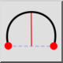
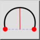
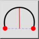
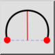

2 Punkte und Höhe
Werkzeugleiste / Symbol:
 

Menü: Zeichnen > Bogen > 2 Punkte und Höhe
Tastenkürzel: A, H
Kommandos: archeight | ah
Werkzeugleiste / Symbol:
 

Menü: Zeichnen > Bogen > 2 Punkte und Höhe
Tastenkürzel: A, H
Kommandos: archeight | ah
Zeichnet einen Kreisbogen mit Startpunkt, Endpunkt und Höhe.